Node-REDの簡易説明¶
Node-REDはデフォルトで1880番ポートを用いてブラウザアクセス行います。
そのため、WLAN対応のOpenBlocksシリーズでのデフォルトIPでのWLAN経由でのNode-REDへのアクセスする為のURLは以下となります。OpenBlocks IX9等でのEthernet経由でのアクセス等については、適宜IPアドレスを変更してください。
アクセスした場合、以下のような画面が初期状態では表示されます。(ログイン認証設定をしていない場合)
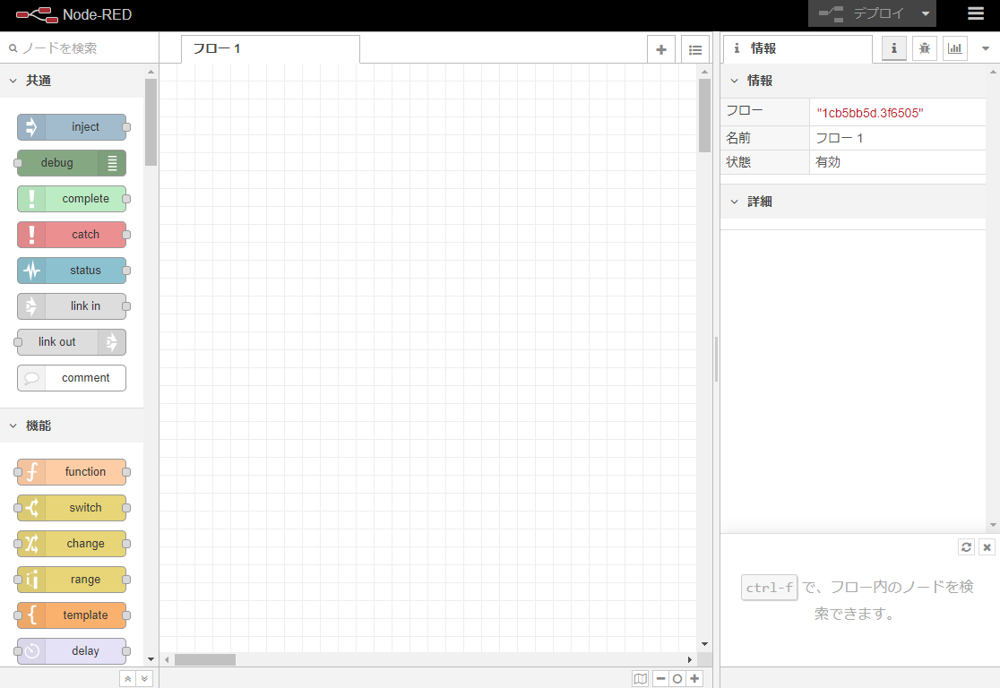
また、本製品向けにデフォルトで用意している入力・出力・処理等のノードは以下となります。
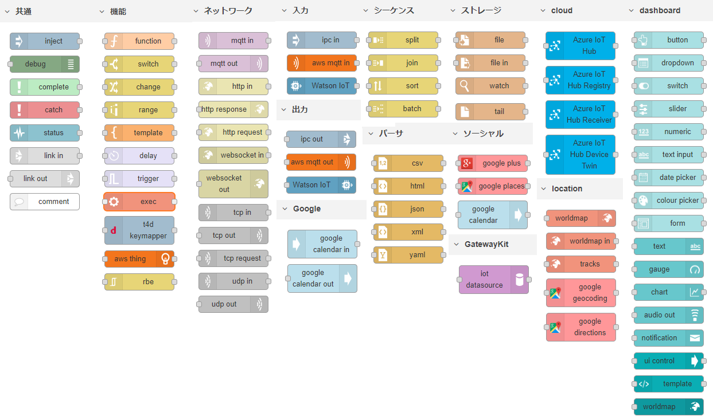
Node-RED画面構成¶
Node-REDの画面は以下のように構成されています。
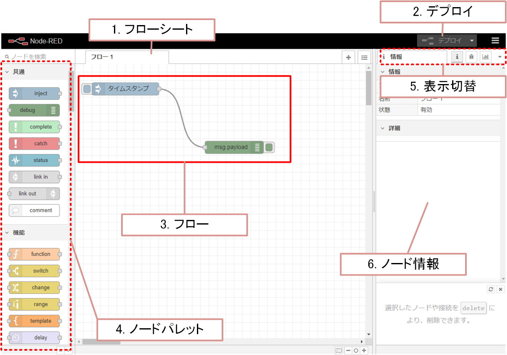
# |
項目 |
説明 |
|---|---|---|
1 |
フローシート |
処理フローを記述するワークスペースです。 |
2 |
デプロイ |
デプロイボタンをクリックすることでシートに記述した処理フローを有効化します。 |
3 |
フロー |
ノードを配置し結線することでデータの流れ（処理フロー）を定義します。 |
4 |
ノードパレット |
処理フローの構成に用いられるノードの一覧です。 |
5 |
表示切替 |
ノード情報・デバック情報の表示を切り替えます。 |
6 |
ノード情報 |
ノード情報、又はデバック情報が表示されます。 |
ノード種類¶
Node-REDでは大きく分けて以下のようなコネクタ配置のノードがあります。
コネクタが右 |
コネクタが左右 |
コネクタが左 |
|---|---|---|
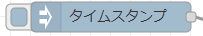 |
|
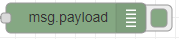 |
・イベント起動 起動条件を満たした時、データを右のノードへ送信します。 |
・データ処理 左からデータを受信し、処理を行います。また、処理後のデータを右のノードで送信します。 |
・イベント終了 左からデータを受信し、該当処理を行い終了します。 |

データは左から右へと処理が行われます。
共通ノード¶
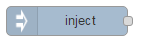 |
手動もしくは一定間隔でメッセージをフローに注入します。 |
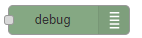 |
「デバッグ」タブに、選択したメッセージプロパティの値を表示します。 |
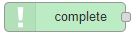 |
他のノードにおけるメッセージ処理の完了を受けてフローを開始します。 |
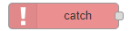 |
同じタブ内のノードが送出したエラーをキャッチします。 |
同じタブ内のノードのステータスメッセージを取得します。 |
|
フロー間に仮想的なリンクを作成します。タブ上に存在するlink outノード に接続できます。 |
|
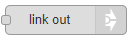 |
フロー間に仮想的なリンクを作成します。タブ上に存在するlink inノードに 接続できます。 |
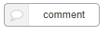 |
フローにコメントを記述するために利用します。 |
機能ノード¶
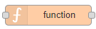 |
受信メッセージに対して処理を行うJavaScriptコード(関数の本体)を定義し ます。 |
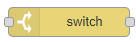 |
プロパティの値によってメッセージの振り分けを行います。 |
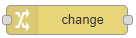 |
メッセージ、フローコンテキスト、グローバルコンテキストのプロパティを 変更、削除、移動します。 |
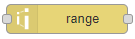 |
数値を異なる範囲の値に変換します。 |
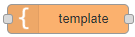 |
テンプレートに基づいてプロパティを設定します。 |
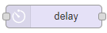 |
ノードを通過するメッセージを遅延もしくは流量を制限します。 |
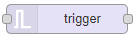 |
メッセージを受信すると、別のメッセージの送信を行います。延長もしく は初期化が指定されていない場合には、2つ目のメッセージを送信することも できます。 |
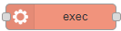 |
システムのコマンドを実行し出力を返します。 |
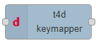 |
入力されたメッセージをToami for Docomo向けのメッセージへ変換します。 |
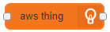 |
AWSIoTのThingShadowを制御します。 |
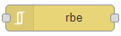 |
例外データのノード - ペイロードの値が変化した場合だけデータを送信しま す。 |
ネットワークノード¶
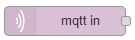 |
MQTTブローカに接続し、指定したトピックのメッセージをサブスクライブし ます。 |
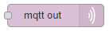 |
MQTTブローカに接続し、メッセージをパブリッシュします。 |
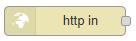 |
HTTPエンドポイントを作成し、Webサービスを構成します。 |
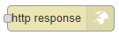 |
HTTP Inノードで受け付けたリクエストに対するレスポンスを送り返します。 |
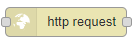 |
HTTPリクエストを送信し、レスポンスを返します。 |
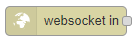 |
WebSocketにより受信したデータはmsg.payloadに格納し出力します。 |
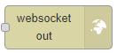 |
入力されたmsg.payloadデータをWebSocket経由で送信します。 |
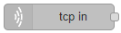 |
TCPからの入力を行います。リモートTCPポートに接続するか、外部からのコ ネクションを受け付けます。 |
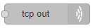 |
TCPへの出力を行います。リモートTCPポートへ接続、外部からのコネクショ ンの受け付け、もしくは、TCP Inノードで受け付けたメッセージへのリプラ イを行います。 |
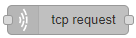 |
シンプルなTCPリクエストノード。msg.payloadをサーバのTCPポートに送信 し、レスポンスを待ちます。 |
|
UDP入力ノード。msg.payloadにバッファ、文字列、もしくは、Base64エンコ ーディング文字列を生成します。 |
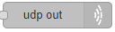 |
入力されたmsg.payloadを指定したUDPのホストとポートに送信します。 |

入力ノード¶
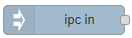 |
Unix Domain Socketから受信したメッセージをmsg.payloadに送信します。 |
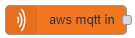 |
AWSIoTに接続し、指定されたトピックにサブスクライブします。 トピック にはMQTTワイルドカードが含まれる場合があります。 |
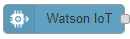 |
IBM Watson Internet of Things Platformからデバイスコマンドを受信しま す。 |
出力ノード¶
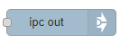 |
msg.payloadをUnix Domain Socketに格納し出力します。 |
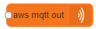 |
AWSIoTに接続し、msg.topicまたは編集ウィンドウで指定されたトピックのい ずれかにmsg.payloadを送信します。 |
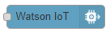 |
デバイスイベントをIBM Watson Internet of Things Platformに送信しま す。 |
シーケンスノード¶
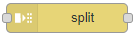 |
メッセージをメッセージ列に分割します。 |
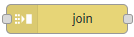 |
メッセージ列を結合して一つのメッセージにします。 |
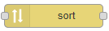 |
メッセージ列もしくは配列型のペイロードをソートします。 |
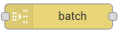 |
指定したルールによりメッセージ列を生成します。 |
パーサノード¶
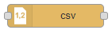 |
CSV形式の文字列とそのJavaScriptオブジェクト表現の間で双方向の変換を行 います。 |
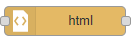 |
msg.payloadに格納したHTMLドキュメントからCSSセレクタを使用して要素を 取り出します。 |
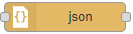 |
JSON文字列とJavaScriptオブジェクトとの間で相互変換を行います。 |
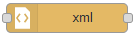 |
XML文字列とJavaScriptオブジェクトとの間で相互変換を行います。 |
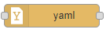 |
YAML文字列とJavaScriptオブジェクトとの間で相互変換を行います。 |
ストレージノード¶
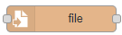 |
msg.payloadをファイルに書き出します。書き出しは、ファイルの最後に追 記もしくは既存の内容の置き換えを選択できます。 |
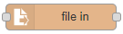 |
ファイルの内容を文字列もしくはバイナリバッファとして読み出します。 |
ディレクトリもしくはファイルの変化を検知します。 |
|
設定したファイルの末尾を出力(追加されたデータを監視)します。 |
ソーシャルノード¶
Google+ APIを操作して、人、活動、コメントに関する情報を取得します。 |
|
Google Places APIを利用して、地元の施設を見つけて詳細を調べます。 |
|
Googleカレンダーの各イベントを返します。 |
cloudノード¶
msg.payloadをAzure IoT Hubに送信するノードです。 |
|
デバイスをAzure IoT Hubに登録するノードです。 |
|
Azure Events Hubエンドポイントを介してデバイスからクラウドへのメッセ ージを受信するためのノードです。 |
|
Azure IoT Hub Device Twinを取得するためのノードです。 |
GetwayKitノード¶
入力データをダッシュボードアプリケーションへ出力します。 |
locationノード¶
入力データをWEB上にプロットします。（インターネット接続が必要です。） |
|
Worldmapの出力Webページからイベントを受信します。 |
|
指定した数の前の場所に基づいてトラックを作成します。 |
|
Google geocordingを用いて入力データをジオコーディング（住所情報と地 理的座標の相互変換）し、出力します。 |
|
Google directionsを用いて入力された出発地点と目的地点の経路を出力し ます。 |
dashboardノード¶
ユーザーインターフェースにボタンを追加します。 |
|
ユーザーインターフェースにドロップダウン選択ボックスを追加します。 |
|
ユーザーインターフェースにスイッチを追加します。 |
|
ユーザーインターフェースにスライダーウィジェットを追加します。 |
|
ユーザーインターフェースに数値入力ウィジェットを追加します。 |
|
ユーザーインターフェースにテキスト入力ウィジェットを追加します。 |
|
ユーザーインターフェースに日付選択ウィジェットを追加します。 |
|
ユーザーインターフェースに色選択ウィジェットを追加します。 |
|
ユーザーインターフェースにフォームを追加します。 |
|
ユーザーインターフェースに編集不可能なテキストフィールドを表示しま す。 |
|
ユーザーインターフェースにゲージタイプのウィジェットを追加します。 |
|
ユーザーインターフェースに入力値をグラフにプロットします。 |
|
ダッシュボードの音声またはテキストを音声で再生します。 |
|
msg.payloadをポップアップ通知またはOK / Cancelダイアログメッセージと してユーザーインターフェイスに表示します。 |
|
ダッシュボードを動的に制御できます。 |
|
テンプレートウィジェットには、任意の有効なhtmlおよび角度/角度 - 材料 指示を含めることができます。 |
|
ダッシュボードのマップに「もの」をプロットします。 |
Googleノード¶
Googleカレンダーでイベントが発生するたびにメッセージを送信します。 |
|
Googleカレンダーにエントリを作成します。 |